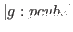

以下に示すものは、プリンタの行動を制御するための特殊変数である。
- *print-case*
- この定数が:downcaseなら、
全てのsymbolは小文字で印刷される。
しかし、symbolは内部的に大文字で表現されたままである。
- *print-circle*
- 再帰的参照を残したオブジェクトを印刷する。
- *print-object*
- 全てのオブジェクトの詳細を印刷する。
- *print-structure*
- #書式を使ってオブジェクトを印刷する。
- *print-level*
- 数列の印刷可能深さ
- *print-length*
- 数列の印刷可能長さ
- *print-escape*
- 現在使用されていない。
- *print-pretty*
- 現在使用されていない。
- *print-base*
- 印刷時の基数；デフォルトは10進数
再帰的参照を持つオブジェクトを印刷するためには、
再度読み戻しが必要なため、
*print-circle*と
*print-structure*を両方Tに設定し、オブジェクトを印刷すること。
ユーザーが定義するほとんどのオブジェクトは再読み込み可能な書式に
表示されるが、
クラス, オブジェクトモジュールやパッケージをその方法でdumpすることはできない。
なぜなら、クラスとオブジェクトモジュールは再配置不可能な実行コードを含み、
パッケージの再読みだしは、構成されるsymbol中に影響があるからである。
print obj &optional stream [関数]
-
-
prin1に続いてterpriを行う。
prin1 obj &optional stream [関数]
-
-
書式に沿ってs表現を1つ出力する。その出力は、
readによって再度読み戻しが可能である。
書式には、スラッシュ（エスケープ）や引用符を含んでいる。
princ obj &optional stream [関数]
-
-
エスケープ（escape）や引用符（quote）の追加(add)がないことを除いて、
printと同じである。
princによるオブジェクト表示は、読み戻しできない。
例えば、(princ 'abc)の出力は、(princ "abc")の出力と
同じであるため、リーダはそれらを区別することができない。
terpri &optional stream [関数]
-
-
#
 newline(改行)を出力して、
streamを空にする。
newline(改行)を出力して、
streamを空にする。
finish-output &optional stream [関数]
-
-
出力streamを空にする。
princ-to-string x &optional (l 16) [関数]
-
-
prin1-to-string x &optional (l 16) [関数]
-
- 文字列への出力ストリームを作り、xを書き込む。そして、
get-output-stream-stringを実行する。
format stream format-string &rest args [関数]
-
-
A(ascii), S(S-表現), D(10進数),
X(16進数), O(8進数), C(文字), F(実数表現), E(指数表現),
G(general float), V(dynamic number parameter), T(タブ)
と% (改行)のフォーマット識別子のみ認識する。
(format t "~s ~s ~a ~a ~10,3f~%" "abc" 'a#b "abc" 'a#b 1.2)
---> "abc" |A#B| abc a#b 1.200
pprint obj &optional (stream *standard-output*) (tab 0) (platen 75) [関数]
-
- objの最後の空白を除いたものを整形表示する。.
print-functions file &rest fns [関数]
-
-
fileにfnsの関数定義の"defun"書式を書き出す。
write-byte integer stream [関数]
-
-
write-word integer stream [関数]
-
-
write-long integer stream [関数]
-
-
integerを1, 2または4バイトにして書く。
spaces n &optional stream [関数]
-
-
空白をn回出力する。
pf func &optional stream *standard-output*) [マクロ]
-
-
関数funcを整形表示する。コンパイルされた関数は、印刷できない。
pp-method class selector &optional (stream *standard-output*) [関数]
-
- classクラスの中に定義されたselectorメソッドを整形表示する。
tprint obj tab &optional (indent 0) (platen 79) (cpos 0) [関数]
-
- 表形式でobjを印刷する。
print-size obj [関数]
-
-
印刷のときのobjの大体の長さを返す。
2016-03-23